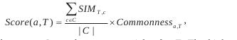
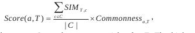

Wikipedia Indexing and Analysis
| Author: | Didier Deshommes |
|---|---|
| Date: | 2012-10-26 |
Meta Information
- Me: Long-time Python user. Work at Parse.ly, a web analytics
- company for publishers.
E-mail me: didier@parsely.com
What This Talk Covers
- using Wikipedia data and Solr for NLP tasks
- using Wikipedia traffic data to search for real-time trends
Why Wikipedia?
Wikipedia as a data source is very attractive:
- the number of articles rivals traditional corpora
- the number of topics covered is broad
- the Wikimedia Foundation ensures this data is free and publicly accessible to everyone
Finding the data
The Wikimedia Foundation project hosts dumps from all its projects at http://dumps.wikimedia.org/
Useful page for knowing where to download what: http://en.wikipedia.org/wiki/Wikipedia:Database_download
Link to latest XML dump of Wikipedia: http://download.wikimedia.org/enwiki/latest/enwiki-latest-pages-articles.xml.bz2
The file is (predictably) huge, so use incremental parsing: http://effbot.org/zone/element-iterparse.htm
Wikipedia efforts
The Wikimedia Foundation itself has started building analytics tools for viewing this information at http://www.mediawiki.org/wiki/Analytics
Contains:
- a framework for processing data called Kraken: http://www.mediawiki.org/wiki/Analytics/Kraken
- a GUI toolking for doing custom visualizations, Limn: http://www.mediawiki.org/wiki/Analytics/Limn
Data peculiarities
Not all Wikipedia pages are created equal. We are not interested in
- special pages: pages whose title starts with Wikipedia: and are generally of an administrative nature
- categories pages
- stub pages: pages that do not exist yet
Data features: categories
Wikipedia's category system is rich, the problem with them is that they can be too specific or too broad for inferring topics. Barack Obama's categories include :
- Democratic Party United States Senators (too specific)
- Current national leaders (too broad)
Data features: links
Links to other pages in a Wikipedia page indicate a relationship between them.
- early inhabitants of Haiti (http://en.wikipedia.org/wiki/Haiti)
- were Taino Indians (http://en.wikipedia.org/wiki/Ta%C3%ADno_people)
- who were speakers of the Arawakan language (http://en.wikipedia.org/wiki/Arawakan)
Data to be extracted from a page
- page title
- links in the page
- categories the page belongs to
- page text
- redirects this page may have
What are redirects?
Redirects are pages that redirect to a 'canonical' page.
- These pages are the same:
- Barack_Obama
- Barack_Hussein_Obama (redirect)
Indexing to Solr
- we will index and store titles to the title field
- we will index links to the multi-valued links field
- we will index link anchors to the multi-valued link_texts field
- we will index categories to the multi-valued categories field
- we will index title and page text to the text field
- we will index redirects to the redirect field
- Example document
Using Solr and Wikipedia
Disambiguation: Jaguar vs jaguar
Example: an article talking is talking about jaguars. Is the article about the car or the animal?
- http://en.wikipedia.org/wiki/Jaguar has links to 'big cat', 'feline', several other animals, several countries, 'sexual maturity', etc.
- http://en.wikipedia.org/wiki/Jaguar_Cars has links to 'Tata Motors', several other car companies, etc
Disambiguation algorithm
From Topic Indexing with Wikipedia
Given an article T, we want to find some of its main topics.
Extract all word ngrams
compute keyphraseness of each ngram: ratio of number of Wikipedia articles in which this ngram appears as a link and the number of articles in which it appears
identify Wikipedia article corresponding to ngram
- if it's a direct match, we are done
- if the match is a disambiguation page, disambiguate it
Handling ambiguous terms
We use the direct, unambiguous ngrams that surround an ambigious ngram to disambiguate it. Each ambiguous ngram has several meanings, we will call them candidates. For each candidate:
- compute its similarity to the other direct terms
- compute its commonness: the overall popularity of the candidate as an anchor
- Multiply both values to get an overall score for this candidate
- the candidate with the higest score is chosen
Formulas
 

Example
"You would have to be a millionaire to be able to buy a sports car like a Jaguar"
- Ambiguous term is Jaguar,
- millionaire and sports car are unambiguous
Similarity score
wikipedia_similarity("Millionaire","Jaguar Cars") = 0.40296
wikipedia_similarity("Millionaire","Jaguar") = 0.4692
wikipedia_similarity("Sports car","Jaguar Cars") = 0.58767
wikipedia_similarity("Sports car","Jaguar") = 0.38630
Commonnness
Jaguar appears as a link anchor in Wikipedia around 930 times.
- it links to Jaguar cars 466 times. Its commonness is around 0.5
- it links to the animal around 203 times. Its commonness is around 0.2
Scores
- Score for Jaguar Cars: ((0.402 + 0.587)/2)* 0.5 = 0.2472
- Score for Jaguar: ((0.4692 + 0.3863)/2)* 0.2 = 0.085
- So Jaguar is correctly disambiguated as Jaguar Cars
Avoiding disambiguation through brute force
Brute-force algorithm:
for each sentence in text:
query wikipedia corpus, retain say, top 10 results
out of these 10n results, select the most frequent ones
Avoiding disambiguation through brute force(2)
2 ways to select the most frequent results/articles:
- taking the top y articles (top 5, 10)
- taking the top y% of articles (top 1%, 10% )
Some examples
Top pages/topics for Yipit’s Daily Deal Report: Industry Revenue Dips, Groupon Gains Share, And Travel Deals Take Off
- Group buying,
- Groupon,
- Andrew Mason (businessman),
- Groupon MyCityDeal,
- LivingSocial
Some examples (2)
Top pages for We Don’t Need No Stinkin’ Apple Store
- Criticism of Apple Inc.
- Apple Inc.
- Apple Corps v Apple Computer
- More examples here
Drawbacks and work-arounds:
- The running time complexity depends on the number of sentences in the candidate text and the number of results to be retained
- We could submit 2 or more sentences at a time, which would cut on the number of queries but provide slightly less accurate results
- In some cases, top topics identified have nothing to do with the article
Using Solr's MoreLikeThis feature
Constructs a Lucene query based on terms within a document
- Very similar to the previous algorithm
- Have to somehow be "lucky", all results depend on results from the first match
Example of MLT in action
Top topics for Haiti Challenges UN for Cholera Pandemic
- United Nations Stabilisation Mission in Haiti
- Stabilisation Unit
- Evangelical Baptist Mission of South Haiti
Related pages/topics
Pages that link to each other are related, but we can quantify how closely they are related?
- Barack Obama page links to United States of America and Patient Protection and Affordable Care Act
- But United States of America has more pages linking to it because it's such a general term
- So Patient Protection and Affordable Care Act is more closely related to Barack Obama
Recap
- Wikipedia's data is a treasure trove of good data
- Solr can be used to do some 'traditional' NLP tasks like entity recognition, finding an article's main topics
Wikipedia traffic data
Indexing Wikipedia traffic data
Contains page view statistics from Wikipedia pages accessed: http://dumps.wikimedia.org/other/pagecounts-raw/
Useful for determining real-time trends on the web.
Updated every hour.
Parsing traffic data
Pages are stored in a predictable way, broken down by hour.
- Line format:
- project name
- page title
- number of requests to page
- page size
Example entry: fr.b Special:Recherche/Achille_Baraguey_d%5C%27Hilliers 1 624
Saving traffic data
We are not interested in every page, just pages that display Wikipedia articles (including redirects). we will exclude the following pages that start with these strings:
set(["Special:", "Wiktionary:", "Category:",
"Wikinews:", "Subject:","Mediawiki:",
"File:","Wikiversity:", "Topic:", "User_talk:",
"Appendix:","Wikibooks:","Wikijunior:",
"Portal:", "Data:", "Wikipedia:", "Wikiquote:",
">","<","Wikt:","Wikisource:","Wikipedia_Talk:",
"Help:","]","[","Mediawiki_Talk:","Talk:","Image:",
"jquery","Main_Page","404_error","index.html",".css(",
"this.elem","User:","Template:"
])
We also exclude pages that have more than 1 slash (/) in them and pages that have very low page views (say, less than 5 views)
What about redirects?
Barack_Hussein_Obama and Barack_Obama will not have the same number of page hits, even though they will refer to the same page.
The best solution to this is to sum up all the hits from redirect pages for a canonical page.
Knowing when a traffic spike occurs
We need to know the total number of page views occur for a period of time
Wikipedia has this data stored in their project-level counts
Can be found with traffic data, also broken down by hour.
- Line format:
- Project name; generally indicates languages (en, fr, etc)
- total page views for period
- total bytes transfered for period
Example line: en - 8758112 248450166157
Traffic spikes uses
With this, we can determine whether the traffic to a page has really spiked beyond some baseline (ie, weekend, vs Monday traffic)
We can also determine which page has seen the most increase in page views in percentage. For example:
- page A normally has 100 view, but gets 200 views
- page B normally has 1000 views, but gets 1200 views
The spike to page A is more interesting because the change in percentage is greater for it
A traffic spike example (and validation)
Consider the presidential debate that took place on 2012/10/03. Most people think Romney "won" that debate. Could that be reflected in the number of pages accessed in Wikipedia?
- On 2012/10/03, Barack_Obama got around 100K views
- On 2012/10/04, Barack_Obama tripled to around 300K views
- On 2012/10/03, Mitt_Romney got around 150K views
- On 2012/10/04, Mitt_Romney quintupled to around 800K views
- Reflects both the public's renewed interest in both candidates and the consensus that Mitt Romney "won" that debate
Recap
- Wikipedia's data is a treasure trove of good data
- Solr can be used to do some 'traditional' NLP tasks like entity recognition, finding an article's main topics
- Wikipedia traffic data can be used to determine real-time trends on the web